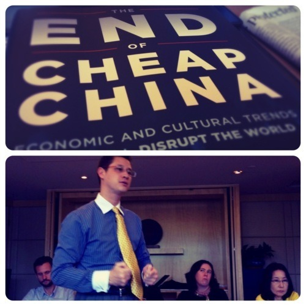
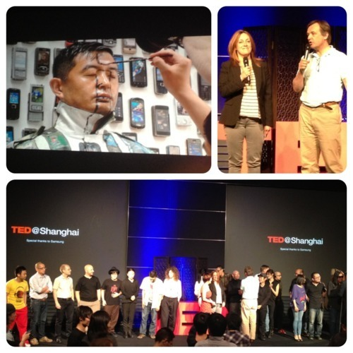

Shaun Rein delivered some interesting insights on what the End of Cheap China means from brand perspective as well as spending habit of the Chinese middle and wealthy class.
The use of ‘hour glass shape’ analogy to describe Chinese spending trends is particularly refreshing. They are willing to spend a lot of money at the top of the hour glass when they see value which is why you see secretaries making $800 USD (RMB5,000) a month buying $1000 Gucci bags. But these same secretaries will shop at the bottom of the hour glass, and be very price sensitive, on product categories that they do not see as adding value, such as nail clippers. Brands that are either at the top of the value chain, or offer price sensitive options will do well. For the moment, brands that are in the middle of the hour glass, like a GAP or Marks & Spencer fail to do well. They are not cheap enough to appeal to price sensitive habits but do not offer enough value to consumers. More over, using –pardon the racist comment here– using black people in their ad campaign (GAP) or providing mostly size 12 and above for clothing lines (Mark & Spencer), are not something that Chinese aspire to see themselves in.
In this case, I’d have to agree with Shaun that more middle brand positions will do better in the coming decades, but for the next three years that middle range will not do well.
More about the End of Cheap China from manufacturing point of view is thoughtfully written in The Economist’s latest edition here.
–

I chose to skip the afternoon session by Dirk Lenowski and attending TED Shanghai instead. Turned out to be a good decision on my part. As luck would have it, this year TED was actually curated by TED organizer themselves, hence the reason why Chris Anderson was there. This year theme was focus on CHINA.
Although TED brought wonderfully diverse group of speakers and performers, it was also subject to some mediocre contents. Here’s some that I found particularly inspiring and relevant to innovation and creativity in China that worth spreading:
- Richard Brown, showcasing a low cost PC @TED Shanghai for the first time. Unlike various other cheap PC on the market, the APC was able to play hi-def video while performing fast booting process. Users will immediately seen the minimalist desktop with Search Bar available on the top by default. Compared to its predecessor, that pioneered the One Laptop Per Child programme at $100 a piece, this Android-powered PC will be retailed half the price at $49.
- Liu Bo Lin, a.k.a. The Invisible Man. One thing that strikes me about his works were his attention to detail that bordering to obsessive. As former OCD, this is the kind of quality I could relate to. His artworks was his protest against the Chinese government from shutting down his studio back in 2005 as attempt to silence his voice.
- He Feng, founder of Demo Hour, something akin to Kickstarter. Through crowd sourcing, Demo Hour was able to fund the development of Dalan Youth Hostel in Tibet province to cater to young travelers on shoestring budget.
- David Li, founder of Hacker Space Shanghai, the first of its kind in China, delivers challenging notion on how Shanzai culture can contribute to innovation for young tech entrepreneur who believes that iteration is the mother of all invention.
- Andrew Yu, founder of 1kg project, who believes in the power that millions of people taking small steps can change the world, or “democratization of participation”. The idea is to encourage people to take some small gifts to country kids on their trips. There are over 800 schools with registered information at the 1KG website, all uploaded and maintained by the community. More info about the project, also see TEDx1kg support.
- Stephen Chow on The Poverty Line, challenging the question of 'what it means to be poor’ through photography and data visualization.
More videos on TED Shanghai talks will be available online for free by end of June 2012. I had to admit that this year TED Shanghai delivered much superior quality in terms of content, diversity and quality of Speakers. I recalled my disappointment upon attending the first TED in Shanghai and Beijing. Not only was the event packed by foreigners but to add in salt to injury, they were presenting works that were far from relevant to China.
However, I have yet to see when TED becomes less elitist and show more guts in showcasing contents that are not only provocative but also against populist mainstream.